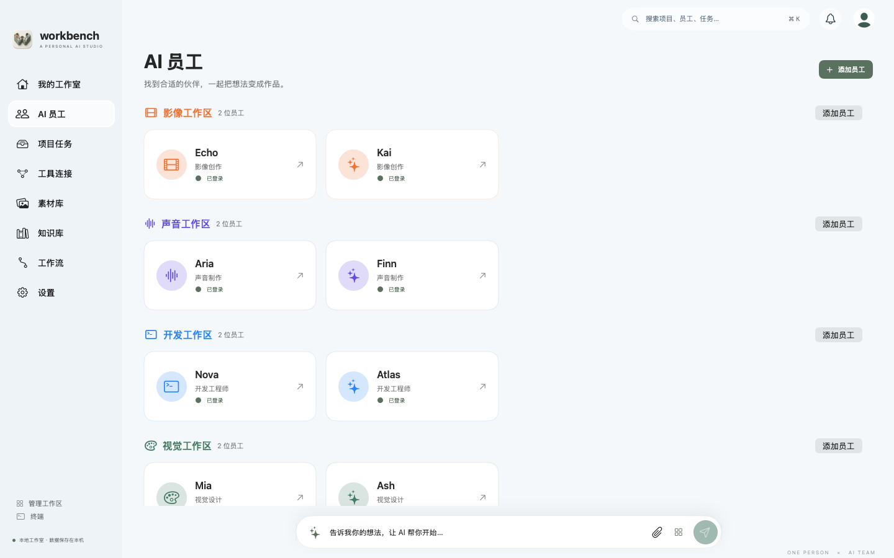
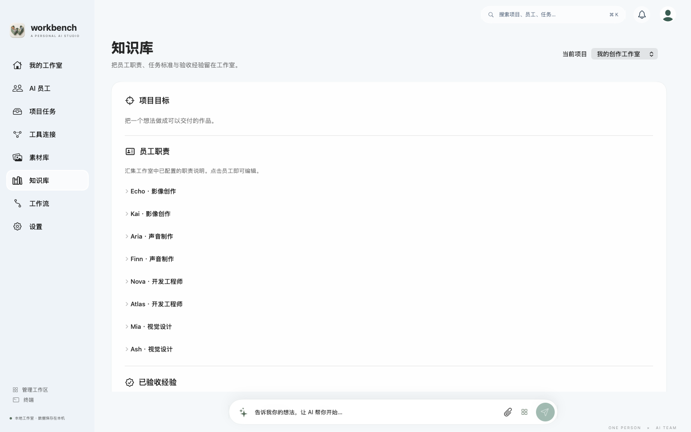
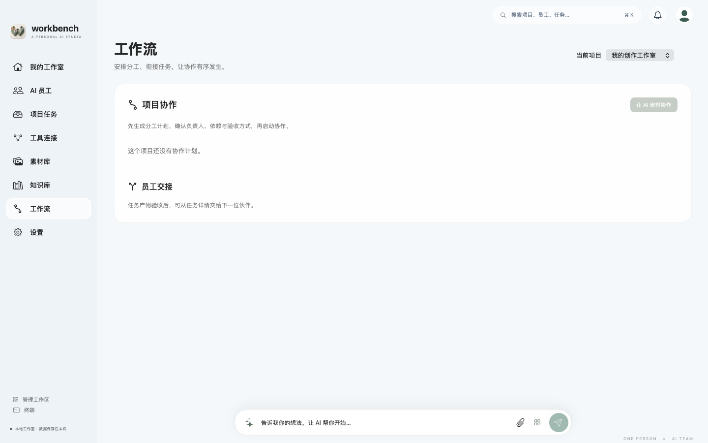
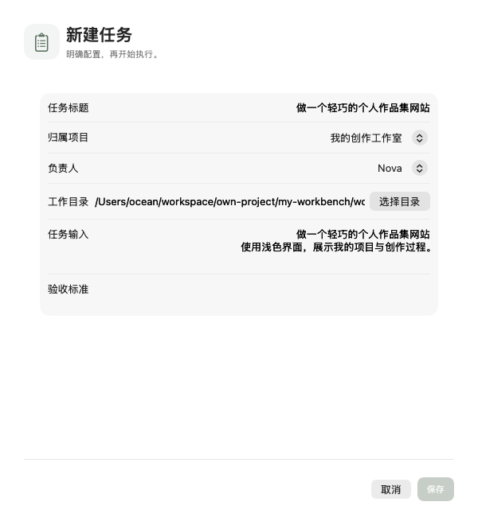
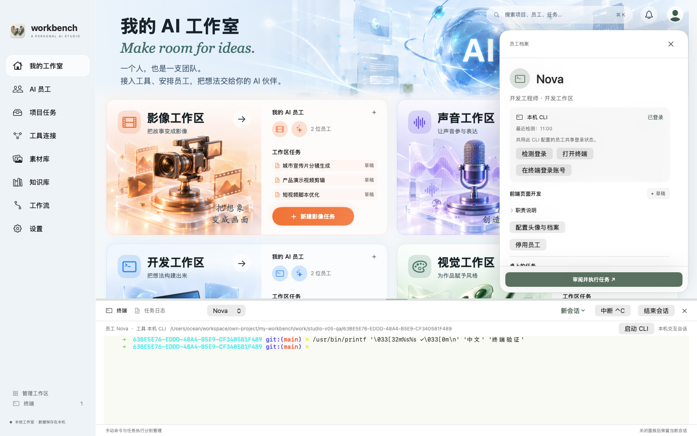
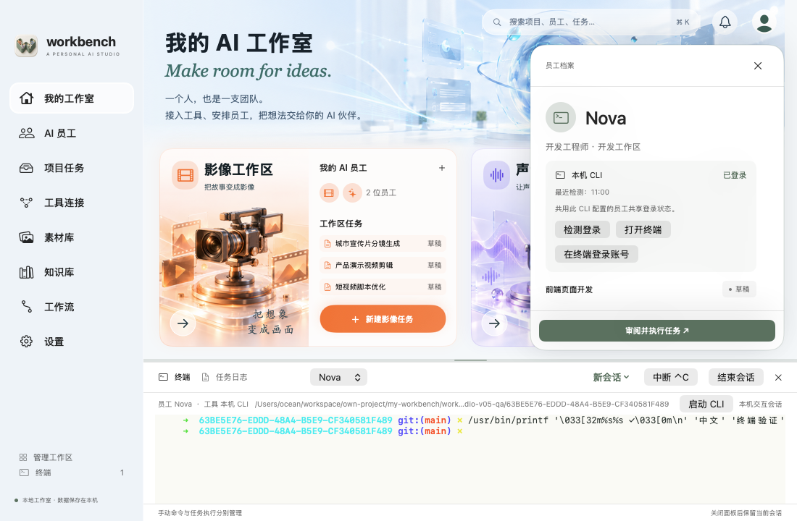
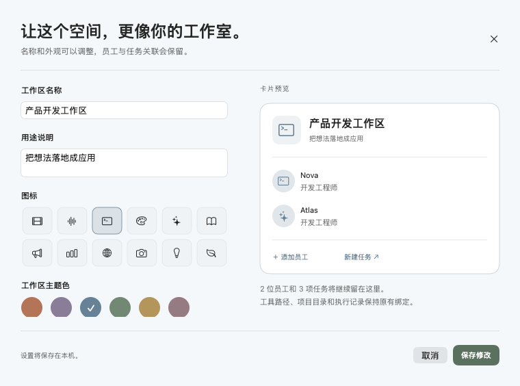

按提供的参考图实现的 SwiftUI 原生界面。以下画面由实际组件渲染，员工与任务是隔离测试数据；它们不会写入你的个人工作室。小窗口和更多工作区可滚动查看。
查看用户参考图 · 工作区插画与提示词 · 横幅素材与提示词 · 设计与交互说明







已验证构建、组件渲染、数据持久化和真实 PTY 输出。离屏画面不能替代真人点击、键盘输入法和辅助功能验收；完整范围见项目验证文档。